Example workflow using the `pacheck` R package
X. Pouwels
2026-01-13
Source:vignettes/Example_workflow.Rmd
Example_workflow.RmdIntroduction
This article describes an example workflow for the use of the
pacheck package.
This vignette is still in development.
1. Upload of original health economic model inputs and outputs
df_pa <- calculate_nb(df = df_pa,
e_int = "t_qaly_d_int",
e_comp = "t_qaly_d_comp",
c_int = "t_costs_d_int",
c_comp = "t_costs_d_comp",
wtp = 80000)# calculate net benefits2. Investigate model inputs and outputs
a. Summary statistics of (user-selected) model inputs and outputs
To examine whether cost inputs are always positive for instance
df <- generate_sum_stats(df_pa)
kable(df)| Parameter | Mean | SD | Percentile_2.5th | Percentile_97.5th | Minimum | Maximum | Median | Skewness | Kurtosis |
|---|---|---|---|---|---|---|---|---|---|
| p_pfspd | 0.150 | 0.036 | 0.086 | 0.227 | 0.056 | 0.273 | 0.150 | 0.288 | 2.992 |
| p_pfsd | 0.099 | 0.029 | 0.049 | 0.162 | 0.023 | 0.210 | 0.098 | 0.418 | 3.158 |
| p_pdd | 0.201 | 0.041 | 0.132 | 0.287 | 0.081 | 0.337 | 0.198 | 0.387 | 3.136 |
| p_dd | 1.000 | 0.000 | 1.000 | 1.000 | 1.000 | 1.000 | 1.000 | NaN | NaN |
| p_ae | 0.049 | 0.021 | 0.016 | 0.095 | 0.008 | 0.133 | 0.046 | 0.688 | 3.376 |
| rr | 0.752 | 0.066 | 0.635 | 0.891 | 0.571 | 0.992 | 0.747 | 0.376 | 3.165 |
| u_pfs | 0.749 | 0.073 | 0.595 | 0.869 | 0.489 | 0.931 | 0.757 | -0.496 | 3.116 |
| u_pd | 0.553 | 0.101 | 0.351 | 0.739 | 0.259 | 0.830 | 0.552 | -0.085 | 2.686 |
| u_d | 0.000 | 0.000 | 0.000 | 0.000 | 0.000 | 0.000 | 0.000 | NaN | NaN |
| u_ae | 0.151 | 0.049 | 0.067 | 0.263 | 0.037 | 0.345 | 0.148 | 0.523 | 3.403 |
| c_pfs | 999.671 | 193.330 | 646.577 | 1376.131 | 308.816 | 1654.198 | 989.462 | 0.102 | 3.087 |
| c_pd | 1980.918 | 402.919 | 1177.242 | 2756.374 | 636.935 | 3202.211 | 1983.282 | -0.036 | 2.958 |
| c_d | 0.000 | 0.000 | 0.000 | 0.000 | 0.000 | 0.000 | 0.000 | NaN | NaN |
| c_thx | 9999.558 | 99.054 | 9796.212 | 10186.641 | 9681.366 | 10336.827 | 9999.813 | -0.103 | 3.075 |
| c_ae | 499.438 | 100.076 | 328.281 | 714.982 | 232.890 | 891.136 | 490.926 | 0.512 | 3.481 |
| t_qaly_comp | 4.061 | 0.831 | 2.619 | 5.862 | 1.857 | 8.361 | 3.974 | 0.673 | 4.251 |
| t_qaly_int | 4.378 | 0.929 | 2.760 | 6.408 | 1.999 | 8.912 | 4.294 | 0.712 | 4.249 |
| t_qaly_d_comp | 3.725 | 0.724 | 2.432 | 5.266 | 1.766 | 7.250 | 3.654 | 0.597 | 4.001 |
| t_qaly_d_int | 3.996 | 0.804 | 2.586 | 5.725 | 1.896 | 7.803 | 3.928 | 0.638 | 4.023 |
| t_costs_comp | 9269.642 | 2293.187 | 5508.489 | 14873.693 | 4094.242 | 20263.209 | 9022.779 | 0.819 | 4.250 |
| t_costs_int | 47424.555 | 10328.280 | 31014.615 | 69801.812 | 22968.730 | 99013.512 | 45792.275 | 0.780 | 4.150 |
| t_costs_d_comp | 7214.577 | 1597.187 | 4474.254 | 11063.979 | 3322.865 | 13865.602 | 7067.409 | 0.635 | 3.720 |
| t_costs_d_int | 38967.560 | 7362.606 | 26799.181 | 54462.057 | 20500.682 | 72567.952 | 38003.745 | 0.603 | 3.662 |
| t_ly_comp | 6.228 | 1.089 | 4.421 | 8.666 | 3.237 | 11.836 | 6.124 | 0.646 | 3.907 |
| t_ly_int | 6.576 | 1.211 | 4.565 | 9.283 | 3.406 | 12.160 | 6.469 | 0.630 | 3.780 |
| t_ly_d_comp | 5.689 | 0.930 | 4.120 | 7.756 | 3.071 | 10.247 | 5.618 | 0.571 | 3.704 |
| t_ly_d_int | 5.978 | 1.029 | 4.234 | 8.225 | 3.222 | 10.502 | 5.912 | 0.557 | 3.607 |
| t_ly_pfs_d_comp | 2.938 | 0.666 | 1.887 | 4.425 | 1.387 | 6.334 | 2.878 | 0.735 | 3.928 |
| t_ly_pfs_d_int | 3.547 | 0.809 | 2.231 | 5.321 | 1.727 | 7.549 | 3.446 | 0.731 | 3.969 |
| t_ly_pd_d_comp | 2.751 | 0.714 | 1.595 | 4.324 | 1.040 | 6.696 | 2.697 | 0.702 | 4.198 |
| t_ly_pd_d_int | 2.431 | 0.680 | 1.336 | 3.930 | 0.884 | 5.877 | 2.385 | 0.719 | 4.005 |
| t_qaly_pfs_d_comp | 2.203 | 0.556 | 1.348 | 3.497 | 0.948 | 4.879 | 2.141 | 0.845 | 4.173 |
| t_qaly_pfs_d_int | 2.658 | 0.670 | 1.586 | 4.215 | 1.180 | 6.195 | 2.576 | 0.859 | 4.355 |
| t_qaly_pd_d_comp | 1.523 | 0.490 | 0.729 | 2.576 | 0.435 | 4.629 | 1.476 | 0.732 | 4.530 |
| t_qaly_pd_d_int | 1.345 | 0.453 | 0.615 | 2.279 | 0.423 | 4.062 | 1.295 | 0.718 | 4.221 |
| t_costs_pfs_d_comp | 2675.011 | 799.195 | 1406.942 | 4432.220 | 793.888 | 7716.981 | 2565.168 | 0.939 | 5.339 |
| t_costs_pfs_d_int | 34981.137 | 7374.794 | 22686.784 | 51299.957 | 18308.102 | 68863.988 | 34109.811 | 0.629 | 3.693 |
| t_costs_pd_d_comp | 4539.566 | 1464.766 | 2124.354 | 8043.181 | 1421.473 | 10225.953 | 4378.848 | 0.779 | 3.935 |
| t_costs_pd_d_int | 3962.182 | 1349.686 | 1794.809 | 7180.067 | 1144.180 | 9083.731 | 3762.961 | 0.859 | 4.052 |
| t_qaly_ae_int | 0.007 | 0.004 | 0.002 | 0.018 | 0.001 | 0.027 | 0.007 | 1.265 | 5.064 |
| t_costs_ae_int | 24.241 | 11.675 | 7.409 | 52.988 | 3.978 | 84.415 | 21.913 | 1.053 | 4.502 |
| inc_ly | 0.289 | 0.195 | 0.004 | 0.741 | -0.088 | 1.518 | 0.267 | 1.206 | 6.215 |
| inc_qaly | 0.271 | 0.162 | 0.034 | 0.632 | -0.024 | 1.354 | 0.247 | 1.315 | 6.849 |
| inc_costs | 31752.983 | 6723.465 | 20573.126 | 46486.595 | 16508.440 | 63729.724 | 31027.028 | 0.624 | 3.671 |
| NMB_int | 280706.492 | 58624.126 | 178890.052 | 401706.647 | 131147.731 | 551706.933 | 275644.049 | 0.620 | 3.993 |
| NMB_comp | 290806.818 | 57064.404 | 188915.430 | 412008.941 | 137320.155 | 567089.638 | 285085.381 | 0.597 | 3.996 |
| iNMB | -10100.326 | 9779.795 | -25319.808 | 11751.086 | -33987.932 | 44628.255 | -11075.367 | 1.125 | 6.140 |
| NHB_int | 3.509 | 0.733 | 2.236 | 5.021 | 1.639 | 6.896 | 3.446 | 0.620 | 3.993 |
| NHB_comp | 3.635 | 0.713 | 2.361 | 5.150 | 1.717 | 7.089 | 3.564 | 0.597 | 3.996 |
| iNHB | -0.126 | 0.122 | -0.316 | 0.147 | -0.425 | 0.558 | -0.138 | 1.125 | 6.140 |
rm(df)b. Correlation matrix inputs (and outputs)
generate_cor(df_pa)## Warning in cor(df): the standard deviation is zero## p_pfspd p_pfsd p_pdd p_dd p_ae rr u_pfs u_pd u_d
## p_pfspd 1.000 -0.131 -0.073 NA 0.011 0.027 -0.031 0.000 NA
## p_pfsd -0.131 1.000 0.010 NA 0.015 0.058 0.020 -0.012 NA
## p_pdd -0.073 0.010 1.000 NA -0.017 -0.014 -0.080 -0.044 NA
## p_dd NA NA NA 1 NA NA NA NA NA
## p_ae 0.011 0.015 -0.017 NA 1.000 0.045 -0.011 -0.010 NA
## rr 0.027 0.058 -0.014 NA 0.045 1.000 0.044 -0.053 NA
## u_pfs -0.031 0.020 -0.080 NA -0.011 0.044 1.000 0.052 NA
## u_pd 0.000 -0.012 -0.044 NA -0.010 -0.053 0.052 1.000 NA
## u_d NA NA NA NA NA NA NA NA 1
## u_ae -0.003 -0.062 0.013 NA -0.010 -0.042 0.016 0.060 NA
## c_pfs -0.015 -0.050 -0.026 NA -0.032 0.000 0.029 0.044 NA
## c_pd -0.001 0.017 0.021 NA 0.007 -0.015 0.003 -0.007 NA
## c_d NA NA NA NA NA NA NA NA NA
## c_thx -0.025 0.045 0.003 NA -0.036 0.021 -0.033 -0.014 NA
## c_ae -0.003 0.005 0.013 NA -0.021 -0.010 -0.022 0.083 NA
## t_qaly_comp -0.235 -0.640 -0.431 NA -0.017 -0.057 0.333 0.406 NA
## t_qaly_int -0.217 -0.714 -0.347 NA -0.027 -0.164 0.341 0.330 NA
## t_qaly_d_comp -0.233 -0.644 -0.414 NA -0.018 -0.056 0.352 0.413 NA
## t_qaly_d_int -0.213 -0.715 -0.334 NA -0.028 -0.161 0.362 0.336 NA
## t_costs_comp 0.096 -0.535 -0.541 NA -0.018 -0.023 0.042 0.029 NA
## t_costs_int -0.515 -0.704 -0.068 NA -0.032 -0.269 0.014 0.019 NA
## t_costs_d_comp 0.136 -0.538 -0.487 NA -0.019 -0.021 0.035 0.031 NA
## t_costs_d_int -0.519 -0.710 -0.052 NA -0.032 -0.271 0.011 0.020 NA
## t_ly_comp -0.136 -0.749 -0.554 NA -0.010 -0.046 0.047 0.022 NA
## t_ly_int -0.123 -0.820 -0.441 NA -0.015 -0.140 0.031 0.019 NA
## t_ly_d_comp -0.130 -0.767 -0.538 NA -0.010 -0.047 0.044 0.022 NA
## t_ly_d_int -0.114 -0.834 -0.427 NA -0.015 -0.138 0.029 0.020 NA
## t_ly_pfs_d_comp -0.722 -0.553 0.052 NA -0.022 -0.066 0.025 0.006 NA
## t_ly_pfs_d_int -0.605 -0.641 0.045 NA -0.030 -0.297 0.008 0.014 NA
## t_ly_pd_d_comp 0.505 -0.483 -0.749 NA 0.008 0.000 0.034 0.024 NA
## t_ly_pd_d_int 0.546 -0.500 -0.700 NA 0.013 0.144 0.034 0.014 NA
## t_qaly_pfs_d_comp -0.665 -0.494 0.008 NA -0.025 -0.044 0.414 0.028 NA
## t_qaly_pfs_d_int -0.564 -0.576 0.003 NA -0.033 -0.252 0.400 0.036 NA
## t_qaly_pd_d_comp 0.411 -0.391 -0.621 NA 0.002 -0.033 0.051 0.579 NA
## t_qaly_pd_d_int 0.457 -0.418 -0.597 NA 0.007 0.087 0.051 0.545 NA
## t_costs_pfs_d_comp -0.522 -0.427 0.015 NA -0.049 -0.046 0.040 0.037 NA
## t_costs_pfs_d_int -0.605 -0.641 0.043 NA -0.035 -0.295 0.008 0.019 NA
## t_costs_pd_d_comp 0.433 -0.353 -0.539 NA 0.006 0.002 0.016 0.014 NA
## t_costs_pd_d_int 0.474 -0.371 -0.517 NA 0.009 0.132 0.016 0.007 NA
## t_qaly_ae_int 0.006 -0.022 -0.006 NA 0.784 0.025 -0.010 0.019 NA
## t_costs_ae_int 0.007 0.019 -0.014 NA 0.889 0.034 -0.017 0.021 NA
## inc_ly 0.016 -0.744 0.311 NA -0.032 -0.505 -0.057 -0.003 NA
## inc_qaly -0.014 -0.673 0.196 NA -0.059 -0.550 0.222 -0.180 NA
## inc_costs -0.601 -0.650 0.059 NA -0.031 -0.292 0.004 0.014 NA
## NMB_int -0.168 -0.695 -0.360 NA -0.026 -0.143 0.396 0.367 NA
## NMB_comp -0.240 -0.639 -0.407 NA -0.017 -0.057 0.357 0.419 NA
## iNMB 0.394 -0.442 0.218 NA -0.056 -0.527 0.290 -0.248 NA
## NHB_int -0.168 -0.695 -0.360 NA -0.026 -0.143 0.396 0.367 NA
## NHB_comp -0.240 -0.639 -0.407 NA -0.017 -0.057 0.357 0.419 NA
## iNHB 0.394 -0.442 0.218 NA -0.056 -0.527 0.290 -0.248 NA
## u_ae c_pfs c_pd c_d c_thx c_ae t_qaly_comp
## p_pfspd -0.003 -0.015 -0.001 NA -0.025 -0.003 -0.235
## p_pfsd -0.062 -0.050 0.017 NA 0.045 0.005 -0.640
## p_pdd 0.013 -0.026 0.021 NA 0.003 0.013 -0.431
## p_dd NA NA NA NA NA NA NA
## p_ae -0.010 -0.032 0.007 NA -0.036 -0.021 -0.017
## rr -0.042 0.000 -0.015 NA 0.021 -0.010 -0.057
## u_pfs 0.016 0.029 0.003 NA -0.033 -0.022 0.333
## u_pd 0.060 0.044 -0.007 NA -0.014 0.083 0.406
## u_d NA NA NA NA NA NA NA
## u_ae 1.000 0.000 0.004 NA 0.006 -0.013 0.072
## c_pfs 0.000 1.000 -0.083 NA -0.045 0.043 0.077
## c_pd 0.004 -0.083 1.000 NA 0.025 0.025 -0.021
## c_d NA NA NA 1 NA NA NA
## c_thx 0.006 -0.045 0.025 NA 1.000 0.001 -0.031
## c_ae -0.013 0.043 0.025 NA 0.001 1.000 0.006
## t_qaly_comp 0.072 0.077 -0.021 NA -0.031 0.006 1.000
## t_qaly_int 0.076 0.073 -0.020 NA -0.038 0.003 0.982
## t_qaly_d_comp 0.072 0.077 -0.021 NA -0.032 0.008 0.999
## t_qaly_d_int 0.076 0.073 -0.020 NA -0.040 0.004 0.981
## t_costs_comp 0.036 0.266 0.512 NA -0.016 -0.002 0.621
## t_costs_int 0.066 0.115 0.085 NA 0.010 -0.006 0.742
## t_costs_d_comp 0.034 0.319 0.542 NA -0.018 0.005 0.577
## t_costs_d_int 0.065 0.126 0.087 NA 0.016 -0.003 0.734
## t_ly_comp 0.051 0.066 -0.025 NA -0.021 -0.026 0.862
## t_ly_int 0.061 0.064 -0.024 NA -0.029 -0.024 0.851
## t_ly_d_comp 0.051 0.066 -0.025 NA -0.022 -0.025 0.861
## t_ly_d_int 0.061 0.064 -0.025 NA -0.030 -0.022 0.849
## t_ly_pfs_d_comp 0.050 0.050 -0.017 NA -0.012 -0.005 0.651
## t_ly_pfs_d_int 0.064 0.048 -0.016 NA -0.024 -0.006 0.673
## t_ly_pd_d_comp 0.020 0.040 -0.017 NA -0.018 -0.028 0.515
## t_ly_pd_d_int 0.016 0.040 -0.018 NA -0.017 -0.027 0.484
## t_qaly_pfs_d_comp 0.053 0.058 -0.012 NA -0.025 -0.010 0.730
## t_qaly_pfs_d_int 0.067 0.057 -0.012 NA -0.036 -0.010 0.754
## t_qaly_pd_d_comp 0.046 0.048 -0.018 NA -0.019 0.024 0.649
## t_qaly_pd_d_int 0.042 0.046 -0.018 NA -0.018 0.023 0.626
## t_costs_pfs_d_comp 0.044 0.690 -0.061 NA -0.036 0.013 0.517
## t_costs_pfs_d_int 0.064 0.131 -0.021 NA 0.016 -0.003 0.673
## t_costs_pd_d_comp 0.013 -0.028 0.625 NA 0.000 -0.002 0.347
## t_costs_pd_d_int 0.008 -0.026 0.592 NA 0.001 -0.002 0.331
## t_qaly_ae_int 0.565 -0.029 0.023 NA -0.023 -0.027 0.020
## t_costs_ae_int -0.016 -0.014 0.026 NA -0.036 0.402 -0.012
## inc_ly 0.076 0.023 -0.009 NA -0.050 0.001 0.370
## inc_qaly 0.056 0.020 -0.007 NA -0.053 -0.016 0.397
## inc_costs 0.063 0.062 -0.033 NA 0.021 -0.004 0.667
## NMB_int 0.075 0.065 -0.033 NA -0.046 0.005 0.983
## NMB_comp 0.072 0.069 -0.036 NA -0.032 0.008 0.999
## iNMB 0.030 -0.017 0.014 NA -0.085 -0.018 0.066
## NHB_int 0.075 0.065 -0.033 NA -0.046 0.005 0.983
## NHB_comp 0.072 0.069 -0.036 NA -0.032 0.008 0.999
## iNHB 0.030 -0.017 0.014 NA -0.085 -0.018 0.066
## t_qaly_int t_qaly_d_comp t_qaly_d_int t_costs_comp
## p_pfspd -0.217 -0.233 -0.213 0.096
## p_pfsd -0.714 -0.644 -0.715 -0.535
## p_pdd -0.347 -0.414 -0.334 -0.541
## p_dd NA NA NA NA
## p_ae -0.027 -0.018 -0.028 -0.018
## rr -0.164 -0.056 -0.161 -0.023
## u_pfs 0.341 0.352 0.362 0.042
## u_pd 0.330 0.413 0.336 0.029
## u_d NA NA NA NA
## u_ae 0.076 0.072 0.076 0.036
## c_pfs 0.073 0.077 0.073 0.266
## c_pd -0.020 -0.021 -0.020 0.512
## c_d NA NA NA NA
## c_thx -0.038 -0.032 -0.040 -0.016
## c_ae 0.003 0.008 0.004 -0.002
## t_qaly_comp 0.982 0.999 0.981 0.621
## t_qaly_int 1.000 0.983 0.999 0.610
## t_qaly_d_comp 0.983 1.000 0.983 0.610
## t_qaly_d_int 0.999 0.983 1.000 0.600
## t_costs_comp 0.610 0.610 0.600 1.000
## t_costs_int 0.808 0.740 0.801 0.522
## t_costs_d_comp 0.572 0.569 0.564 0.994
## t_costs_d_int 0.801 0.732 0.794 0.516
## t_ly_comp 0.866 0.850 0.854 0.752
## t_ly_int 0.885 0.843 0.875 0.722
## t_ly_d_comp 0.869 0.851 0.858 0.749
## t_ly_d_int 0.884 0.841 0.875 0.719
## t_ly_pfs_d_comp 0.688 0.650 0.683 0.291
## t_ly_pfs_d_int 0.746 0.672 0.740 0.340
## t_ly_pd_d_comp 0.490 0.502 0.480 0.704
## t_ly_pd_d_int 0.451 0.473 0.443 0.684
## t_qaly_pfs_d_comp 0.766 0.737 0.770 0.287
## t_qaly_pfs_d_int 0.823 0.761 0.826 0.331
## t_qaly_pd_d_comp 0.585 0.642 0.580 0.577
## t_qaly_pd_d_int 0.557 0.620 0.553 0.577
## t_costs_pfs_d_comp 0.540 0.517 0.536 0.398
## t_costs_pfs_d_int 0.744 0.672 0.739 0.360
## t_costs_pd_d_comp 0.329 0.338 0.323 0.867
## t_costs_pd_d_int 0.303 0.322 0.298 0.847
## t_qaly_ae_int 0.013 0.020 0.012 0.013
## t_costs_ae_int -0.022 -0.011 -0.022 -0.010
## inc_ly 0.524 0.378 0.526 0.221
## inc_qaly 0.563 0.406 0.567 0.251
## inc_costs 0.741 0.667 0.736 0.329
## NMB_int 0.996 0.986 0.997 0.594
## NMB_comp 0.983 1.000 0.983 0.592
## iNMB 0.234 0.078 0.244 0.106
## NHB_int 0.996 0.986 0.997 0.594
## NHB_comp 0.983 1.000 0.983 0.592
## iNHB 0.234 0.078 0.244 0.106
## t_costs_int t_costs_d_comp t_costs_d_int t_ly_comp t_ly_int
## p_pfspd -0.515 0.136 -0.519 -0.136 -0.123
## p_pfsd -0.704 -0.538 -0.710 -0.749 -0.820
## p_pdd -0.068 -0.487 -0.052 -0.554 -0.441
## p_dd NA NA NA NA NA
## p_ae -0.032 -0.019 -0.032 -0.010 -0.015
## rr -0.269 -0.021 -0.271 -0.046 -0.140
## u_pfs 0.014 0.035 0.011 0.047 0.031
## u_pd 0.019 0.031 0.020 0.022 0.019
## u_d NA NA NA NA NA
## u_ae 0.066 0.034 0.065 0.051 0.061
## c_pfs 0.115 0.319 0.126 0.066 0.064
## c_pd 0.085 0.542 0.087 -0.025 -0.024
## c_d NA NA NA NA NA
## c_thx 0.010 -0.018 0.016 -0.021 -0.029
## c_ae -0.006 0.005 -0.003 -0.026 -0.024
## t_qaly_comp 0.742 0.577 0.734 0.862 0.851
## t_qaly_int 0.808 0.572 0.801 0.866 0.885
## t_qaly_d_comp 0.740 0.569 0.732 0.850 0.843
## t_qaly_d_int 0.801 0.564 0.794 0.854 0.875
## t_costs_comp 0.522 0.994 0.516 0.752 0.722
## t_costs_int 1.000 0.495 0.999 0.779 0.837
## t_costs_d_comp 0.495 1.000 0.491 0.702 0.681
## t_costs_d_int 0.999 0.491 1.000 0.769 0.829
## t_ly_comp 0.779 0.702 0.769 1.000 0.984
## t_ly_int 0.837 0.681 0.829 0.984 1.000
## t_ly_d_comp 0.785 0.702 0.775 1.000 0.987
## t_ly_d_int 0.838 0.679 0.830 0.981 1.000
## t_ly_pfs_d_comp 0.931 0.257 0.931 0.640 0.677
## t_ly_pfs_d_int 0.978 0.310 0.979 0.681 0.750
## t_ly_pd_d_comp 0.154 0.674 0.141 0.705 0.654
## t_ly_pd_d_int 0.104 0.660 0.093 0.676 0.621
## t_qaly_pfs_d_comp 0.851 0.252 0.850 0.603 0.630
## t_qaly_pfs_d_int 0.899 0.300 0.898 0.643 0.699
## t_qaly_pd_d_comp 0.128 0.554 0.119 0.573 0.531
## t_qaly_pd_d_int 0.092 0.558 0.083 0.566 0.519
## t_costs_pfs_d_comp 0.739 0.409 0.747 0.501 0.525
## t_costs_pfs_d_int 0.981 0.335 0.983 0.680 0.748
## t_costs_pd_d_comp 0.137 0.867 0.128 0.493 0.456
## t_costs_pd_d_int 0.091 0.850 0.083 0.480 0.437
## t_qaly_ae_int 0.009 0.011 0.009 0.020 0.020
## t_costs_ae_int -0.030 -0.008 -0.029 -0.017 -0.022
## inc_ly 0.679 0.238 0.684 0.411 0.566
## inc_qaly 0.667 0.258 0.668 0.437 0.574
## inc_costs 0.976 0.300 0.978 0.675 0.746
## NMB_int 0.753 0.557 0.746 0.841 0.856
## NMB_comp 0.737 0.549 0.730 0.844 0.837
## iNMB 0.210 0.134 0.211 0.114 0.246
## NHB_int 0.753 0.557 0.746 0.841 0.856
## NHB_comp 0.737 0.549 0.730 0.844 0.837
## iNHB 0.210 0.134 0.211 0.114 0.246
## t_ly_d_comp t_ly_d_int t_ly_pfs_d_comp t_ly_pfs_d_int
## p_pfspd -0.130 -0.114 -0.722 -0.605
## p_pfsd -0.767 -0.834 -0.553 -0.641
## p_pdd -0.538 -0.427 0.052 0.045
## p_dd NA NA NA NA
## p_ae -0.010 -0.015 -0.022 -0.030
## rr -0.047 -0.138 -0.066 -0.297
## u_pfs 0.044 0.029 0.025 0.008
## u_pd 0.022 0.020 0.006 0.014
## u_d NA NA NA NA
## u_ae 0.051 0.061 0.050 0.064
## c_pfs 0.066 0.064 0.050 0.048
## c_pd -0.025 -0.025 -0.017 -0.016
## c_d NA NA NA NA
## c_thx -0.022 -0.030 -0.012 -0.024
## c_ae -0.025 -0.022 -0.005 -0.006
## t_qaly_comp 0.861 0.849 0.651 0.673
## t_qaly_int 0.869 0.884 0.688 0.746
## t_qaly_d_comp 0.851 0.841 0.650 0.672
## t_qaly_d_int 0.858 0.875 0.683 0.740
## t_costs_comp 0.749 0.719 0.291 0.340
## t_costs_int 0.785 0.838 0.931 0.978
## t_costs_d_comp 0.702 0.679 0.257 0.310
## t_costs_d_int 0.775 0.830 0.931 0.979
## t_ly_comp 1.000 0.981 0.640 0.681
## t_ly_int 0.987 1.000 0.677 0.750
## t_ly_d_comp 1.000 0.985 0.645 0.688
## t_ly_d_int 0.985 1.000 0.678 0.751
## t_ly_pfs_d_comp 0.645 0.678 1.000 0.961
## t_ly_pfs_d_int 0.688 0.751 0.961 1.000
## t_ly_pd_d_comp 0.701 0.651 -0.093 -0.001
## t_ly_pd_d_int 0.673 0.620 -0.117 -0.053
## t_qaly_pfs_d_comp 0.606 0.629 0.916 0.874
## t_qaly_pfs_d_int 0.648 0.699 0.887 0.916
## t_qaly_pd_d_comp 0.570 0.529 -0.078 0.002
## t_qaly_pd_d_int 0.564 0.519 -0.100 -0.040
## t_costs_pfs_d_comp 0.504 0.526 0.742 0.712
## t_costs_pfs_d_int 0.687 0.749 0.957 0.995
## t_costs_pd_d_comp 0.490 0.454 -0.124 -0.051
## t_costs_pd_d_int 0.479 0.437 -0.148 -0.099
## t_qaly_ae_int 0.020 0.021 0.010 0.008
## t_costs_ae_int -0.017 -0.021 -0.021 -0.029
## inc_ly 0.430 0.578 0.500 0.686
## inc_qaly 0.452 0.582 0.482 0.669
## inc_costs 0.683 0.748 0.959 0.998
## NMB_int 0.843 0.855 0.632 0.689
## NMB_comp 0.844 0.835 0.653 0.674
## iNMB 0.128 0.255 -0.023 0.197
## NHB_int 0.843 0.855 0.632 0.689
## NHB_comp 0.844 0.835 0.653 0.674
## iNHB 0.128 0.255 -0.023 0.197
## t_ly_pd_d_comp t_ly_pd_d_int t_qaly_pfs_d_comp
## p_pfspd 0.505 0.546 -0.665
## p_pfsd -0.483 -0.500 -0.494
## p_pdd -0.749 -0.700 0.008
## p_dd NA NA NA
## p_ae 0.008 0.013 -0.025
## rr 0.000 0.144 -0.044
## u_pfs 0.034 0.034 0.414
## u_pd 0.024 0.014 0.028
## u_d NA NA NA
## u_ae 0.020 0.016 0.053
## c_pfs 0.040 0.040 0.058
## c_pd -0.017 -0.018 -0.012
## c_d NA NA NA
## c_thx -0.018 -0.017 -0.025
## c_ae -0.028 -0.027 -0.010
## t_qaly_comp 0.515 0.484 0.730
## t_qaly_int 0.490 0.451 0.766
## t_qaly_d_comp 0.502 0.473 0.737
## t_qaly_d_int 0.480 0.443 0.770
## t_costs_comp 0.704 0.684 0.287
## t_costs_int 0.154 0.104 0.851
## t_costs_d_comp 0.674 0.660 0.252
## t_costs_d_int 0.141 0.093 0.850
## t_ly_comp 0.705 0.676 0.603
## t_ly_int 0.654 0.621 0.630
## t_ly_d_comp 0.701 0.673 0.606
## t_ly_d_int 0.651 0.620 0.629
## t_ly_pfs_d_comp -0.093 -0.117 0.916
## t_ly_pfs_d_int -0.001 -0.053 0.874
## t_ly_pd_d_comp 1.000 0.986 -0.065
## t_ly_pd_d_int 0.986 1.000 -0.087
## t_qaly_pfs_d_comp -0.065 -0.087 1.000
## t_qaly_pfs_d_int 0.017 -0.031 0.968
## t_qaly_pd_d_comp 0.815 0.798 -0.045
## t_qaly_pd_d_int 0.828 0.833 -0.065
## t_costs_pfs_d_comp -0.035 -0.052 0.690
## t_costs_pfs_d_int 0.001 -0.050 0.871
## t_costs_pd_d_comp 0.755 0.748 -0.101
## t_costs_pd_d_int 0.762 0.778 -0.123
## t_qaly_ae_int 0.018 0.022 0.006
## t_costs_ae_int -0.002 0.002 -0.025
## inc_ly 0.093 0.058 0.429
## inc_qaly 0.139 0.086 0.526
## inc_costs -0.006 -0.055 0.871
## NMB_int 0.509 0.475 0.738
## NMB_comp 0.491 0.462 0.741
## iNMB 0.187 0.152 0.096
## NHB_int 0.509 0.475 0.738
## NHB_comp 0.491 0.462 0.741
## iNHB 0.187 0.152 0.096
## t_qaly_pfs_d_int t_qaly_pd_d_comp t_qaly_pd_d_int
## p_pfspd -0.564 0.411 0.457
## p_pfsd -0.576 -0.391 -0.418
## p_pdd 0.003 -0.621 -0.597
## p_dd NA NA NA
## p_ae -0.033 0.002 0.007
## rr -0.252 -0.033 0.087
## u_pfs 0.400 0.051 0.051
## u_pd 0.036 0.579 0.545
## u_d NA NA NA
## u_ae 0.067 0.046 0.042
## c_pfs 0.057 0.048 0.046
## c_pd -0.012 -0.018 -0.018
## c_d NA NA NA
## c_thx -0.036 -0.019 -0.018
## c_ae -0.010 0.024 0.023
## t_qaly_comp 0.754 0.649 0.626
## t_qaly_int 0.823 0.585 0.557
## t_qaly_d_comp 0.761 0.642 0.620
## t_qaly_d_int 0.826 0.580 0.553
## t_costs_comp 0.331 0.577 0.577
## t_costs_int 0.899 0.128 0.092
## t_costs_d_comp 0.300 0.554 0.558
## t_costs_d_int 0.898 0.119 0.083
## t_ly_comp 0.643 0.573 0.566
## t_ly_int 0.699 0.531 0.519
## t_ly_d_comp 0.648 0.570 0.564
## t_ly_d_int 0.699 0.529 0.519
## t_ly_pfs_d_comp 0.887 -0.078 -0.100
## t_ly_pfs_d_int 0.916 0.002 -0.040
## t_ly_pd_d_comp 0.017 0.815 0.828
## t_ly_pd_d_int -0.031 0.798 0.833
## t_qaly_pfs_d_comp 0.968 -0.045 -0.065
## t_qaly_pfs_d_int 1.000 0.027 -0.012
## t_qaly_pd_d_comp 0.027 1.000 0.990
## t_qaly_pd_d_int -0.012 0.990 1.000
## t_costs_pfs_d_comp 0.667 -0.018 -0.035
## t_costs_pfs_d_int 0.911 0.006 -0.036
## t_costs_pd_d_comp -0.037 0.614 0.627
## t_costs_pd_d_int -0.080 0.615 0.648
## t_qaly_ae_int 0.003 0.023 0.027
## t_costs_ae_int -0.033 0.012 0.016
## inc_ly 0.599 0.072 0.047
## inc_qaly 0.700 0.004 -0.029
## inc_costs 0.912 -0.001 -0.042
## NMB_int 0.794 0.621 0.596
## NMB_comp 0.764 0.637 0.614
## iNMB 0.298 0.007 -0.009
## NHB_int 0.794 0.621 0.596
## NHB_comp 0.764 0.637 0.614
## iNHB 0.298 0.007 -0.009
## t_costs_pfs_d_comp t_costs_pfs_d_int t_costs_pd_d_comp
## p_pfspd -0.522 -0.605 0.433
## p_pfsd -0.427 -0.641 -0.353
## p_pdd 0.015 0.043 -0.539
## p_dd NA NA NA
## p_ae -0.049 -0.035 0.006
## rr -0.046 -0.295 0.002
## u_pfs 0.040 0.008 0.016
## u_pd 0.037 0.019 0.014
## u_d NA NA NA
## u_ae 0.044 0.064 0.013
## c_pfs 0.690 0.131 -0.028
## c_pd -0.061 -0.021 0.625
## c_d NA NA NA
## c_thx -0.036 0.016 0.000
## c_ae 0.013 -0.003 -0.002
## t_qaly_comp 0.517 0.673 0.347
## t_qaly_int 0.540 0.744 0.329
## t_qaly_d_comp 0.517 0.672 0.338
## t_qaly_d_int 0.536 0.739 0.323
## t_costs_comp 0.398 0.360 0.867
## t_costs_int 0.739 0.981 0.137
## t_costs_d_comp 0.409 0.335 0.867
## t_costs_d_int 0.747 0.983 0.128
## t_ly_comp 0.501 0.680 0.493
## t_ly_int 0.525 0.748 0.456
## t_ly_d_comp 0.504 0.687 0.490
## t_ly_d_int 0.526 0.749 0.454
## t_ly_pfs_d_comp 0.742 0.957 -0.124
## t_ly_pfs_d_int 0.712 0.995 -0.051
## t_ly_pd_d_comp -0.035 0.001 0.755
## t_ly_pd_d_int -0.052 -0.050 0.748
## t_qaly_pfs_d_comp 0.690 0.871 -0.101
## t_qaly_pfs_d_int 0.667 0.911 -0.037
## t_qaly_pd_d_comp -0.018 0.006 0.614
## t_qaly_pd_d_int -0.035 -0.036 0.627
## t_costs_pfs_d_comp 1.000 0.767 -0.100
## t_costs_pfs_d_int 0.767 1.000 -0.053
## t_costs_pd_d_comp -0.100 -0.053 1.000
## t_costs_pd_d_int -0.115 -0.100 0.989
## t_qaly_ae_int -0.018 0.004 0.022
## t_costs_ae_int -0.039 -0.033 0.012
## inc_ly 0.367 0.679 0.059
## inc_qaly 0.353 0.661 0.089
## inc_costs 0.721 0.997 -0.066
## NMB_int 0.495 0.687 0.338
## NMB_comp 0.513 0.673 0.319
## iNMB -0.029 0.188 0.162
## NHB_int 0.495 0.687 0.338
## NHB_comp 0.513 0.673 0.319
## iNHB -0.029 0.188 0.162
## t_costs_pd_d_int t_qaly_ae_int t_costs_ae_int inc_ly
## p_pfspd 0.474 0.006 0.007 0.016
## p_pfsd -0.371 -0.022 0.019 -0.744
## p_pdd -0.517 -0.006 -0.014 0.311
## p_dd NA NA NA NA
## p_ae 0.009 0.784 0.889 -0.032
## rr 0.132 0.025 0.034 -0.505
## u_pfs 0.016 -0.010 -0.017 -0.057
## u_pd 0.007 0.019 0.021 -0.003
## u_d NA NA NA NA
## u_ae 0.008 0.565 -0.016 0.076
## c_pfs -0.026 -0.029 -0.014 0.023
## c_pd 0.592 0.023 0.026 -0.009
## c_d NA NA NA NA
## c_thx 0.001 -0.023 -0.036 -0.050
## c_ae -0.002 -0.027 0.402 0.001
## t_qaly_comp 0.331 0.020 -0.012 0.370
## t_qaly_int 0.303 0.013 -0.022 0.524
## t_qaly_d_comp 0.322 0.020 -0.011 0.378
## t_qaly_d_int 0.298 0.012 -0.022 0.526
## t_costs_comp 0.847 0.013 -0.010 0.221
## t_costs_int 0.091 0.009 -0.030 0.679
## t_costs_d_comp 0.850 0.011 -0.008 0.238
## t_costs_d_int 0.083 0.009 -0.029 0.684
## t_ly_comp 0.480 0.020 -0.017 0.411
## t_ly_int 0.437 0.020 -0.022 0.566
## t_ly_d_comp 0.479 0.020 -0.017 0.430
## t_ly_d_int 0.437 0.021 -0.021 0.578
## t_ly_pfs_d_comp -0.148 0.010 -0.021 0.500
## t_ly_pfs_d_int -0.099 0.008 -0.029 0.686
## t_ly_pd_d_comp 0.762 0.018 -0.002 0.093
## t_ly_pd_d_int 0.778 0.022 0.002 0.058
## t_qaly_pfs_d_comp -0.123 0.006 -0.025 0.429
## t_qaly_pfs_d_int -0.080 0.003 -0.033 0.599
## t_qaly_pd_d_comp 0.615 0.023 0.012 0.072
## t_qaly_pd_d_int 0.648 0.027 0.016 0.047
## t_costs_pfs_d_comp -0.115 -0.018 -0.039 0.367
## t_costs_pfs_d_int -0.100 0.004 -0.033 0.679
## t_costs_pd_d_comp 0.989 0.022 0.012 0.059
## t_costs_pd_d_int 1.000 0.022 0.013 0.020
## t_qaly_ae_int 0.022 1.000 0.689 0.011
## t_costs_ae_int 0.013 0.689 1.000 -0.032
## inc_ly 0.020 0.011 -0.032 1.000
## inc_qaly 0.036 -0.029 -0.062 0.921
## inc_costs -0.111 0.007 -0.029 0.693
## NMB_int 0.316 0.012 -0.021 0.491
## NMB_comp 0.303 0.020 -0.011 0.377
## iNMB 0.124 -0.043 -0.061 0.740
## NHB_int 0.316 0.012 -0.021 0.491
## NHB_comp 0.303 0.020 -0.011 0.377
## iNHB 0.124 -0.043 -0.061 0.740
## inc_qaly inc_costs NMB_int NMB_comp iNMB NHB_int NHB_comp
## p_pfspd -0.014 -0.601 -0.168 -0.240 0.394 -0.168 -0.240
## p_pfsd -0.673 -0.650 -0.695 -0.639 -0.442 -0.695 -0.639
## p_pdd 0.196 0.059 -0.360 -0.407 0.218 -0.360 -0.407
## p_dd NA NA NA NA NA NA NA
## p_ae -0.059 -0.031 -0.026 -0.017 -0.056 -0.026 -0.017
## rr -0.550 -0.292 -0.143 -0.057 -0.527 -0.143 -0.057
## u_pfs 0.222 0.004 0.396 0.357 0.290 0.396 0.357
## u_pd -0.180 0.014 0.367 0.419 -0.248 0.367 0.419
## u_d NA NA NA NA NA NA NA
## u_ae 0.056 0.063 0.075 0.072 0.030 0.075 0.072
## c_pfs 0.020 0.062 0.065 0.069 -0.017 0.065 0.069
## c_pd -0.007 -0.033 -0.033 -0.036 0.014 -0.033 -0.036
## c_d NA NA NA NA NA NA NA
## c_thx -0.053 0.021 -0.046 -0.032 -0.085 -0.046 -0.032
## c_ae -0.016 -0.004 0.005 0.008 -0.018 0.005 0.008
## t_qaly_comp 0.397 0.667 0.983 0.999 0.066 0.983 0.999
## t_qaly_int 0.563 0.741 0.996 0.983 0.234 0.996 0.983
## t_qaly_d_comp 0.406 0.667 0.986 1.000 0.078 0.986 1.000
## t_qaly_d_int 0.567 0.736 0.997 0.983 0.244 0.997 0.983
## t_costs_comp 0.251 0.329 0.594 0.592 0.106 0.594 0.592
## t_costs_int 0.667 0.976 0.753 0.737 0.210 0.753 0.737
## t_costs_d_comp 0.258 0.300 0.557 0.549 0.134 0.557 0.549
## t_costs_d_int 0.668 0.978 0.746 0.730 0.211 0.746 0.730
## t_ly_comp 0.437 0.675 0.841 0.844 0.114 0.841 0.844
## t_ly_int 0.574 0.746 0.856 0.837 0.246 0.856 0.837
## t_ly_d_comp 0.452 0.683 0.843 0.844 0.128 0.843 0.844
## t_ly_d_int 0.582 0.748 0.855 0.835 0.255 0.855 0.835
## t_ly_pfs_d_comp 0.482 0.959 0.632 0.653 -0.023 0.632 0.653
## t_ly_pfs_d_int 0.669 0.998 0.689 0.674 0.197 0.689 0.674
## t_ly_pd_d_comp 0.139 -0.006 0.509 0.491 0.187 0.509 0.491
## t_ly_pd_d_int 0.086 -0.055 0.475 0.462 0.152 0.475 0.462
## t_qaly_pfs_d_comp 0.526 0.871 0.738 0.741 0.096 0.738 0.741
## t_qaly_pfs_d_int 0.700 0.912 0.794 0.764 0.298 0.794 0.764
## t_qaly_pd_d_comp 0.004 -0.001 0.621 0.637 0.007 0.621 0.637
## t_qaly_pd_d_int -0.029 -0.042 0.596 0.614 -0.009 0.596 0.614
## t_costs_pfs_d_comp 0.353 0.721 0.495 0.513 -0.029 0.495 0.513
## t_costs_pfs_d_int 0.661 0.997 0.687 0.673 0.188 0.687 0.673
## t_costs_pd_d_comp 0.089 -0.066 0.338 0.319 0.162 0.338 0.319
## t_costs_pd_d_int 0.036 -0.111 0.316 0.303 0.124 0.316 0.303
## t_qaly_ae_int -0.029 0.007 0.012 0.020 -0.043 0.012 0.020
## t_costs_ae_int -0.062 -0.029 -0.021 -0.011 -0.061 -0.021 -0.011
## inc_ly 0.921 0.693 0.491 0.377 0.740 0.491 0.377
## inc_qaly 1.000 0.671 0.538 0.405 0.860 0.538 0.405
## inc_costs 0.671 1.000 0.684 0.669 0.199 0.684 0.669
## NMB_int 0.538 0.684 1.000 0.986 0.241 1.000 0.986
## NMB_comp 0.405 0.669 0.986 1.000 0.076 0.986 1.000
## iNMB 0.860 0.199 0.241 0.076 1.000 0.241 0.076
## NHB_int 0.538 0.684 1.000 0.986 0.241 1.000 0.986
## NHB_comp 0.405 0.669 0.986 1.000 0.076 0.986 1.000
## iNHB 0.860 0.199 0.241 0.076 1.000 0.241 0.076
## iNHB
## p_pfspd 0.394
## p_pfsd -0.442
## p_pdd 0.218
## p_dd NA
## p_ae -0.056
## rr -0.527
## u_pfs 0.290
## u_pd -0.248
## u_d NA
## u_ae 0.030
## c_pfs -0.017
## c_pd 0.014
## c_d NA
## c_thx -0.085
## c_ae -0.018
## t_qaly_comp 0.066
## t_qaly_int 0.234
## t_qaly_d_comp 0.078
## t_qaly_d_int 0.244
## t_costs_comp 0.106
## t_costs_int 0.210
## t_costs_d_comp 0.134
## t_costs_d_int 0.211
## t_ly_comp 0.114
## t_ly_int 0.246
## t_ly_d_comp 0.128
## t_ly_d_int 0.255
## t_ly_pfs_d_comp -0.023
## t_ly_pfs_d_int 0.197
## t_ly_pd_d_comp 0.187
## t_ly_pd_d_int 0.152
## t_qaly_pfs_d_comp 0.096
## t_qaly_pfs_d_int 0.298
## t_qaly_pd_d_comp 0.007
## t_qaly_pd_d_int -0.009
## t_costs_pfs_d_comp -0.029
## t_costs_pfs_d_int 0.188
## t_costs_pd_d_comp 0.162
## t_costs_pd_d_int 0.124
## t_qaly_ae_int -0.043
## t_costs_ae_int -0.061
## inc_ly 0.740
## inc_qaly 0.860
## inc_costs 0.199
## NMB_int 0.241
## NMB_comp 0.076
## iNMB 1.000
## NHB_int 0.241
## NHB_comp 0.076
## iNHB 1.000c. Inspect types of variables
Perform quick checks on input values
Are utility values/probabilities between 0-1, costs positive etc…
do_quick_check(df = df_pa,
v_utilities = c("u_pfs", "u_pd"),
v_costs = c("c_pfs", "c_pd", "c_thx"),
v_rr = "rr"
)## Test passed with 2000 successes 🥇.
## Test passed with 2000 successes 🎊.
## Test passed with 3000 successes 🌈.
## Test passed with 1000 successes 🎊.## Test Result
## 1 All probabilities are positive NOT PERFORMED
## 2 All probabilities are lower or equal to 1 NOT PERFORMED
## 3 All utility values are positive TRUE
## 4 All utility values are lower or equal to 1 TRUE
## 5 All costs parameters are positive TRUE
## 6 All hazard ratios are positive NOT PERFORMED
## 7 All relative risks are positive TRUE
## 8 All rates are positive NOT PERFORMED
## 9 All outcomes are positive NOT PERFORMEDPerform quick comparison discounted and undiscounted results
Are utility values/probabilities between 0-1, costs positive etc…
do_discount_check(df = df_pa,
v_outcomes = c("t_qaly_comp", "t_qaly_int"),
v_outcomes_d = c("t_qaly_d_comp", "t_qaly_d_int")
)## Test passed with 2000 successes 🥇.## Test Result
## 1 All discounted outcomes are lower than undiscounted outcomes TRUEPositive variables
Are these variables strictly positive?
check_positive("c_pfs", "c_pd", df = df_pa)## Input Negative_values
## 1 c_pfs None
## 2 c_pd NoneVariables between 0-1
Are these variables strictly positive?
check_binary("u_pfs", "p_pfspd", df = df_pa)## Input Negative_values Values_above_1
## 1 u_pfs None None
## 2 p_pfspd None NoneSum of probabilities
To check whether the sum is lower than or equal to, or equal to 1
check_sum_probs("p_pfspd", "p_pfsd", df = df_pa, check = "lower") # output is a text## [1] "The sum of probabilities in all iterations is lower or equal to 1"d. Histogram, density distribution of (user-selected) model inputs and outputs
To visually investigate the parameter distributions
Single parameter
p_1 <- vis_1_param(df = df_pa,
param = "u_pfs",
binwidth = NULL,
type = "histogram",
dist = c("norm", "beta", "gamma", "lnorm"))
p_1## `stat_bin()` using `bins = 30`. Pick better value `binwidth`.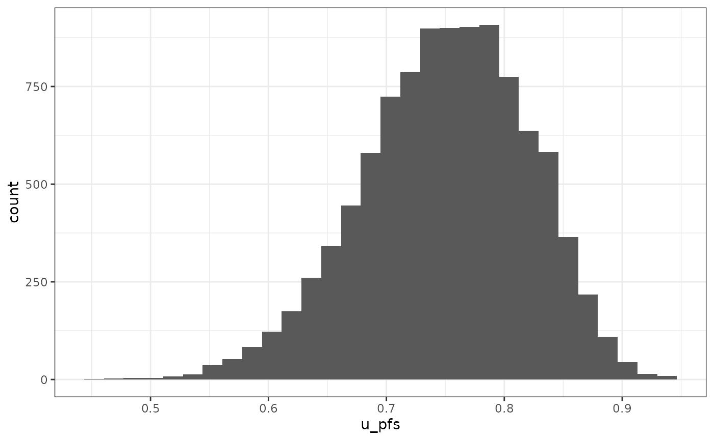
paste("Probability to be in user-defined range: ",
check_range(df_pa,
param = "u_pfs",
min_val = 0.77,
max_val = 0.80
), "%") # add this to plot? + lines of min/ max on plot?## [1] "Probability to be in user-defined range: The proportion of iterations between 0.77 and 0.8 is 15.2% %"Two parameters
p_2p <- vis_2_params(df = df_pa,
param_1 = "u_pfs",
param_2 = "u_pd",
slope = 1,
check = "param_2 > param_1")## Warning: `aes_string()` was deprecated in ggplot2 3.0.0.
## ℹ Please use tidy evaluation idioms with `aes()`.
## ℹ See also `vignette("ggplot2-in-packages")` for more information.
## ℹ The deprecated feature was likely used in the pacheck package.
## Please report the issue at <https://github.com/Xa4P/pacheck/issues>.
## This warning is displayed once per session.
## Call `lifecycle::last_lifecycle_warnings()` to see where this warning was
## generated.## [1] "P(TRUE): 6 %"
p_2p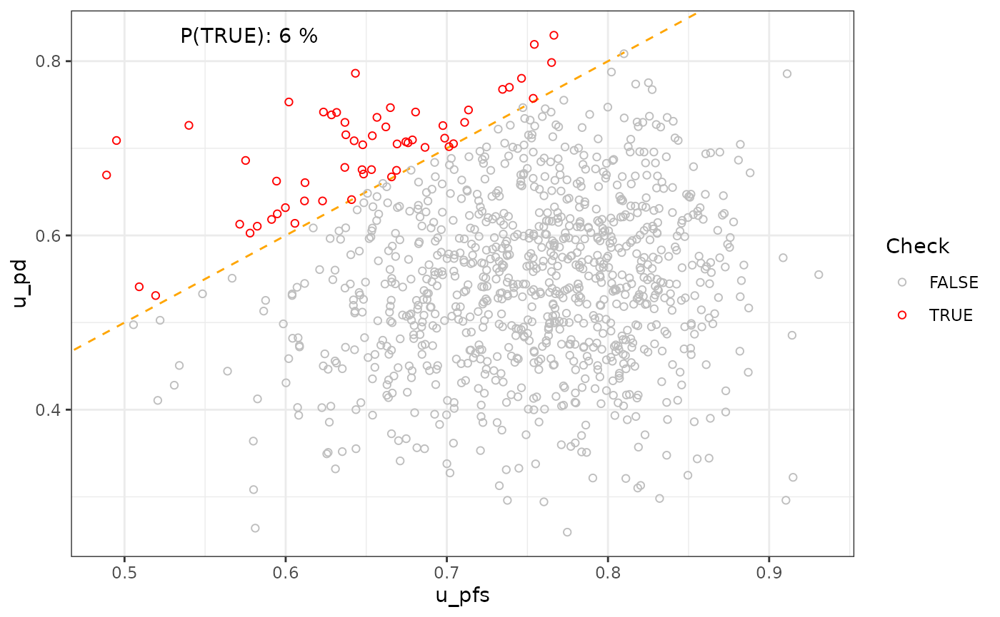
e. Possibility to fit user-selected distributions (beta, gamma, lognormal, normal) + visualisation + parameters of the fitted distribution.
p_2 <- vis_1_param(df = df_pa,
param = "u_pfs",
binwidth = NULL,
type = "density",
dist = c("norm", "beta", "gamma", "lnorm"),
user_dist = "beta",
user_param_1 = 80,
user_param_2 = 20,
user_mean = 0.75)
p_2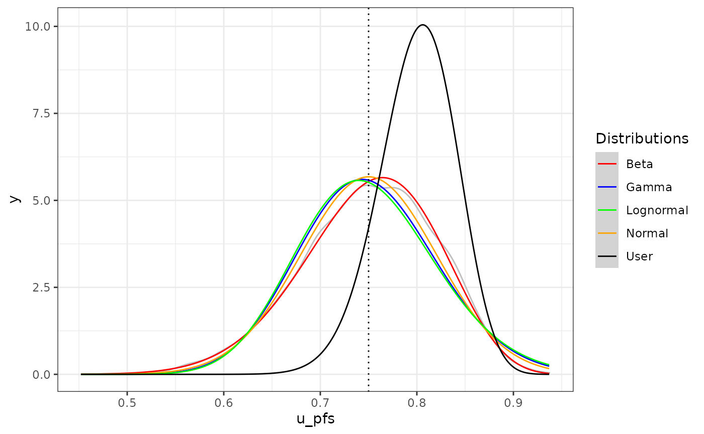
Distributions’ parameters & statistical fit
l_dist <- fit_dist(df = df_pa,
param = "u_pfs",
dist = c("norm", "beta", "gamma", "lnorm"))
l_dist[[1]]## Distribution AIC BIC Kolmorogov-Smirnov
## 1 norm -2389 -2379 0.05
## 2 beta -2435 -2425 0.024
## 3 gamma -2349 -2339 0.062
## 4 lnorm -2324 -2314 0.068
l_dist[[2]]## Distribution Name_param_1 Value_param_1 Name_param_2 Value_param_2
## 1 norm mean 0.75 sd 0.07
## 2 beta shape1 26.05 shape2 8.72
## 3 gamma shape 100.18 rate 133.71
## 4 lnorm meanlog -0.29 sdlog 0.13. Investigate model outputs
a. Incremental cost-effectiveness plane & summary
p_3 <- plot_ice(
df = df_pa,
e_int = "t_qaly_d_int",
e_comp = "t_qaly_d_comp",
c_int = "t_costs_d_int",
c_comp = "t_costs_d_comp",
wtp = 8000
)
p_3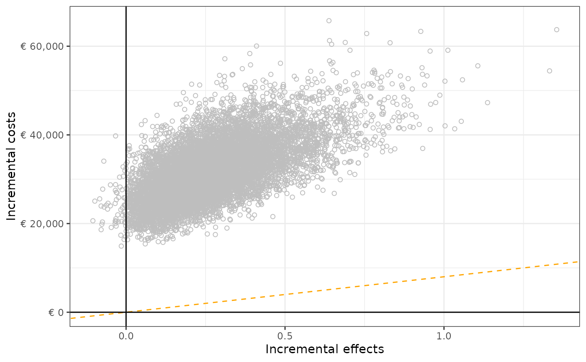
summary_ice(df_pa,
e_int = "t_qaly_d_int",
e_comp = "t_qaly_d_comp",
c_int = "t_costs_d_int",
c_comp = "t_costs_d_comp")## Quadrant Percentage
## 1 NorthEast (more effective, more expensive) 100%
## 2 SouthEast (more effective, less expensive) 0%
## 3 NorthWest (less effective, more expensive) 0%
## 4 SouthWest (less effective, less expensive) 0%b. Cost-effectiveness acceptability curve.
df_ceac <- calculate_ceac(df = df_pa,
e_int = "t_qaly_d_int",
e_comp = "t_qaly_d_comp",
c_int = "t_costs_d_int",
c_comp = "t_costs_d_comp")
plot_ceac(df = df_ceac,
name_wtp = "WTP_threshold")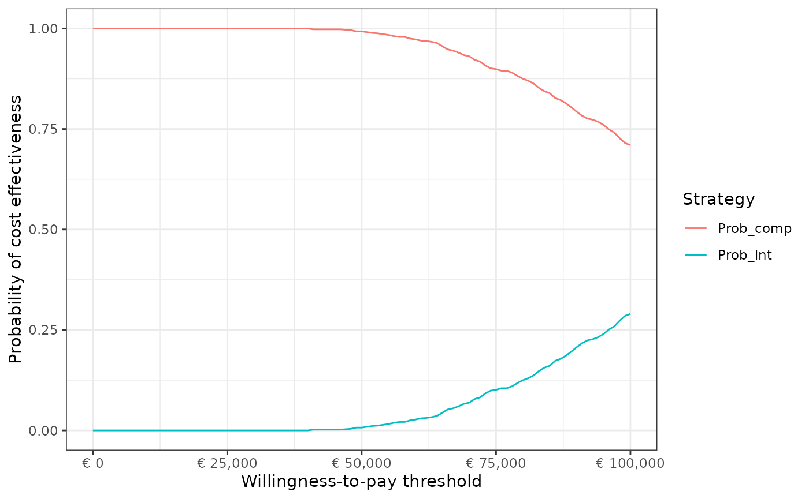
df_ceac## WTP_threshold Prob_int Prob_comp
## 1 0 0.000 1.000
## 2 1000 0.000 1.000
## 3 2000 0.000 1.000
## 4 3000 0.000 1.000
## 5 4000 0.000 1.000
## 6 5000 0.000 1.000
## 7 6000 0.000 1.000
## 8 7000 0.000 1.000
## 9 8000 0.000 1.000
## 10 9000 0.000 1.000
## 11 10000 0.000 1.000
## 12 11000 0.000 1.000
## 13 12000 0.000 1.000
## 14 13000 0.000 1.000
## 15 14000 0.000 1.000
## 16 15000 0.000 1.000
## 17 16000 0.000 1.000
## 18 17000 0.000 1.000
## 19 18000 0.000 1.000
## 20 19000 0.000 1.000
## 21 20000 0.000 1.000
## 22 21000 0.000 1.000
## 23 22000 0.000 1.000
## 24 23000 0.000 1.000
## 25 24000 0.000 1.000
## 26 25000 0.000 1.000
## 27 26000 0.000 1.000
## 28 27000 0.000 1.000
## 29 28000 0.000 1.000
## 30 29000 0.000 1.000
## 31 30000 0.000 1.000
## 32 31000 0.000 1.000
## 33 32000 0.000 1.000
## 34 33000 0.000 1.000
## 35 34000 0.000 1.000
## 36 35000 0.000 1.000
## 37 36000 0.000 1.000
## 38 37000 0.000 1.000
## 39 38000 0.000 1.000
## 40 39000 0.000 1.000
## 41 40000 0.000 1.000
## 42 41000 0.002 0.998
## 43 42000 0.002 0.998
## 44 43000 0.002 0.998
## 45 44000 0.002 0.998
## 46 45000 0.002 0.998
## 47 46000 0.002 0.998
## 48 47000 0.003 0.997
## 49 48000 0.004 0.996
## 50 49000 0.007 0.993
## 51 50000 0.007 0.993
## 52 51000 0.009 0.991
## 53 52000 0.011 0.989
## 54 53000 0.012 0.988
## 55 54000 0.014 0.986
## 56 55000 0.016 0.984
## 57 56000 0.019 0.981
## 58 57000 0.021 0.979
## 59 58000 0.021 0.979
## 60 59000 0.025 0.975
## 61 60000 0.027 0.973
## 62 61000 0.030 0.970
## 63 62000 0.031 0.969
## 64 63000 0.033 0.967
## 65 64000 0.036 0.964
## 66 65000 0.044 0.956
## 67 66000 0.052 0.948
## 68 67000 0.055 0.945
## 69 68000 0.060 0.940
## 70 69000 0.066 0.934
## 71 70000 0.069 0.931
## 72 71000 0.078 0.922
## 73 72000 0.082 0.918
## 74 73000 0.092 0.908
## 75 74000 0.099 0.901
## 76 75000 0.101 0.899
## 77 76000 0.105 0.895
## 78 77000 0.105 0.895
## 79 78000 0.110 0.890
## 80 79000 0.118 0.882
## 81 80000 0.125 0.875
## 82 81000 0.130 0.870
## 83 82000 0.137 0.863
## 84 83000 0.148 0.852
## 85 84000 0.156 0.844
## 86 85000 0.161 0.839
## 87 86000 0.173 0.827
## 88 87000 0.178 0.822
## 89 88000 0.186 0.814
## 90 89000 0.196 0.804
## 91 90000 0.207 0.793
## 92 91000 0.217 0.783
## 93 92000 0.224 0.776
## 94 93000 0.227 0.773
## 95 94000 0.232 0.768
## 96 95000 0.240 0.760
## 97 96000 0.251 0.749
## 98 97000 0.259 0.741
## 99 98000 0.273 0.727
## 100 99000 0.285 0.715
## 101 100000 0.290 0.710c. Histogram and density distribution of total and incremental costs and effects.
Can use the function above!
e. Check whether the mean quality of life outcome of each iteration remain between the maximum and minimum utility values of the specific iteration.
check_mean_qol(df = df_pa,
t_ly = "t_ly_comp",
t_qaly = "t_qaly_comp",
u_values = c("u_pfs", "u_pd")
)## Mean_QoL_below_min Mean_QoL_above_max
## "None" "None"4. Investigate relation between inputs and outputs
Single
lm_rr <- fit_lm_metamodel(df = df_pa,
x_vars = "rr",
y_var = "inc_qaly")
lm_pred <- unlist(predict(lm_rr$fit, data.frame(rr = df_pa$rr)))
df_obs_pred <- data.frame(
Values = df_pa$rr,
Observed = df_pa$inc_qaly,
Predicted = lm_pred
)
ggplot(data = df_obs_pred, aes(x = Values, y = Observed)) +
geom_point(shape = 1, colour = "lightgrey") +
geom_smooth(method = "lm") +
theme_bw()## `geom_smooth()` using formula = 'y ~ x'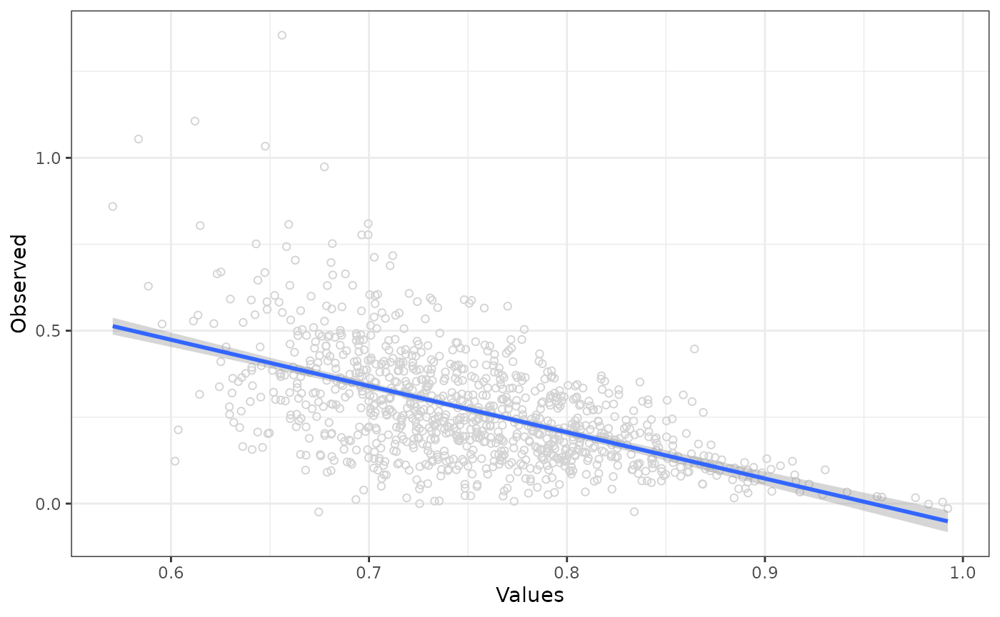
plot(lm_rr$fit)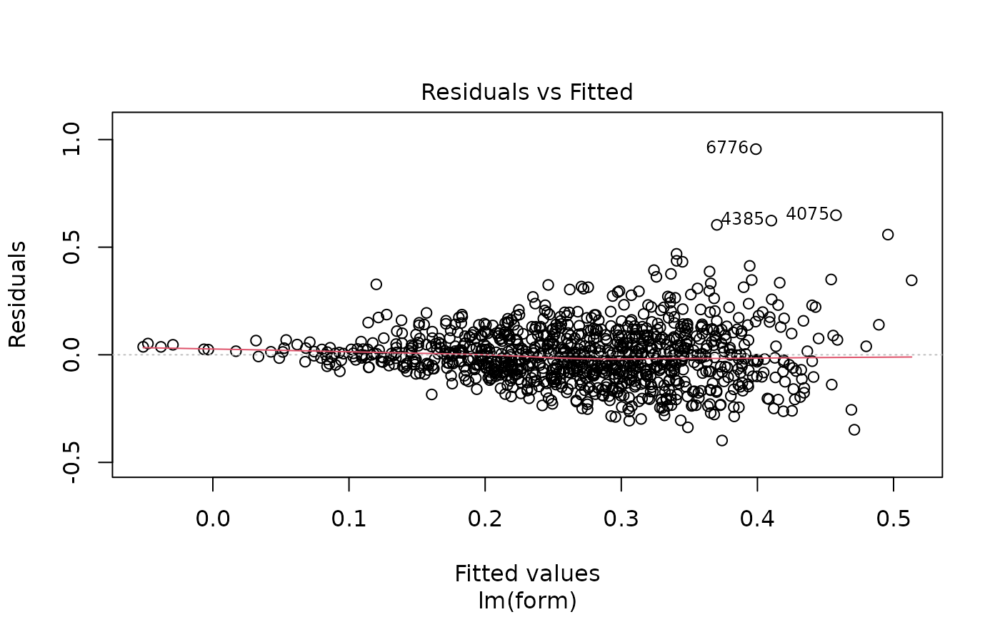
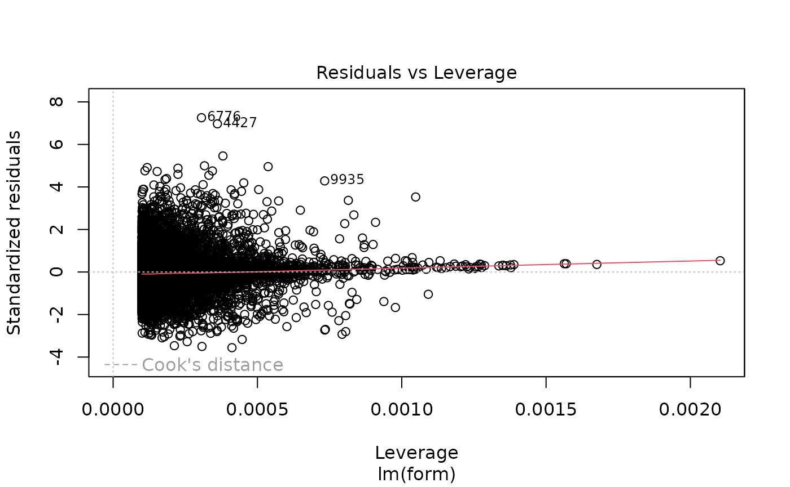
Multiple
lm_full <- fit_lm_metamodel(df = df_pa,
x_vars = c("rr",
"u_pfs",
"u_pd",
"c_pfs",
"c_pd",
"c_thx",
"p_pfspd",
"p_pfsd",
"p_pdd"),
y_var = "inc_qaly")
lm_pred_full <- predict(lm_full$fit, data.frame(rr = df_pa$rr,
u_pfs = mean(df_pa$u_pfs),
u_pd = mean(df_pa$u_pd),
c_pfs = mean(df_pa$c_pfs),
c_pd = mean(df_pa$c_pd),
c_thx = mean(df_pa$c_thx),
p_pfspd = mean(df_pa$p_pfspd),
p_pfsd = mean(df_pa$p_pfsd),
p_pdd = mean(df_pa$p_pdd)))
df_obs_pred_full <- data.frame(
Values = df_pa$rr,
Observed = df_pa$inc_qaly,
Predicted = lm_pred_full
)
ggplot(data = df_obs_pred_full, aes(x = Values, y = Observed)) +
geom_point(shape = 1, colour = "lightgrey") +
geom_line(data = df_obs_pred_full, aes(x = Values, y = Predicted), colour = "blue") +
theme_bw()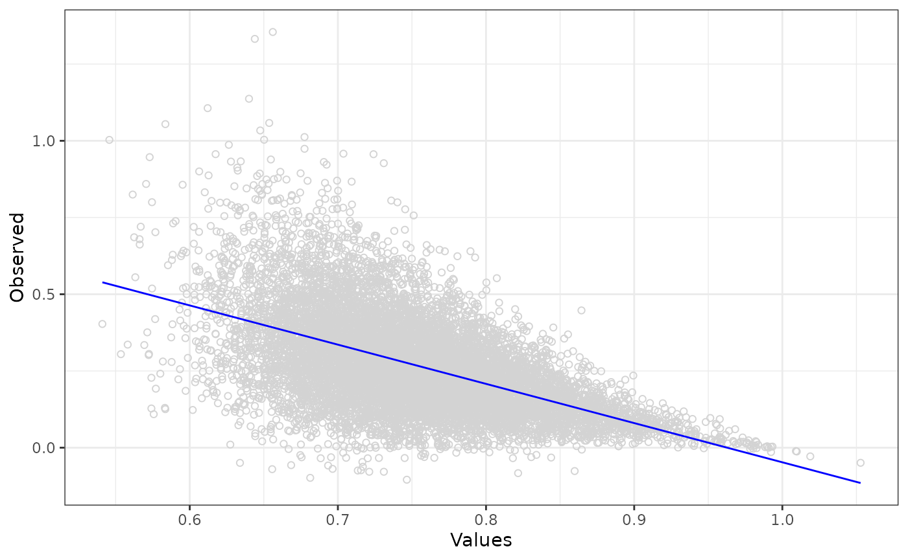
plot(lm_full$fit)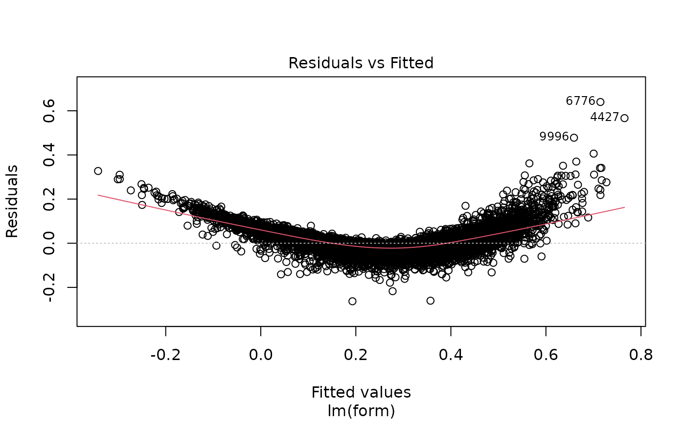
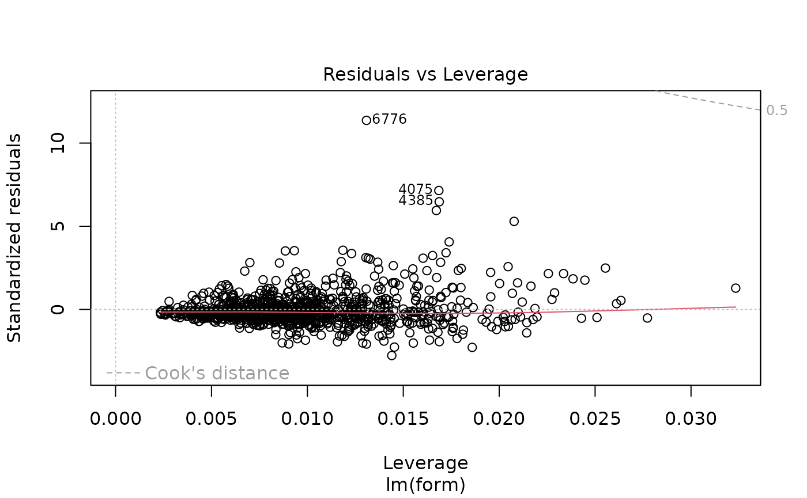
5. Predictions based on metamodel
# Predicting using metamodel fitted above
predict(
lm_full$fit,
data.frame(
rr = 0.9,
u_pfs = 0.75,
u_pd = 0.4,
c_pfs = 1000,
c_pd = 2000,
c_thx = 0,
p_pfspd = 0.5,
p_pfsd = 0.3,
p_pdd = 0.4
)
)## 1
## -0.4003675